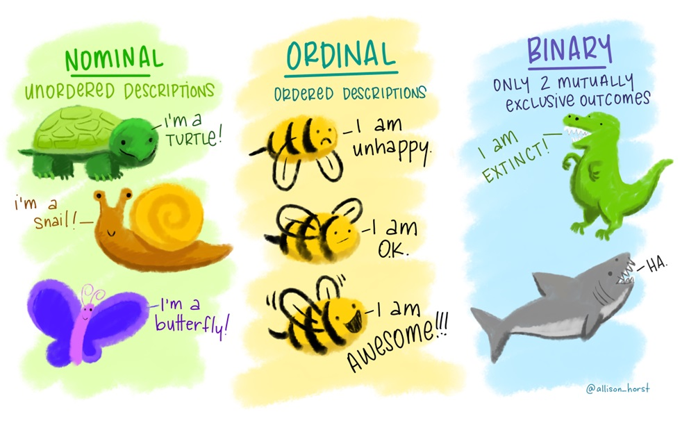
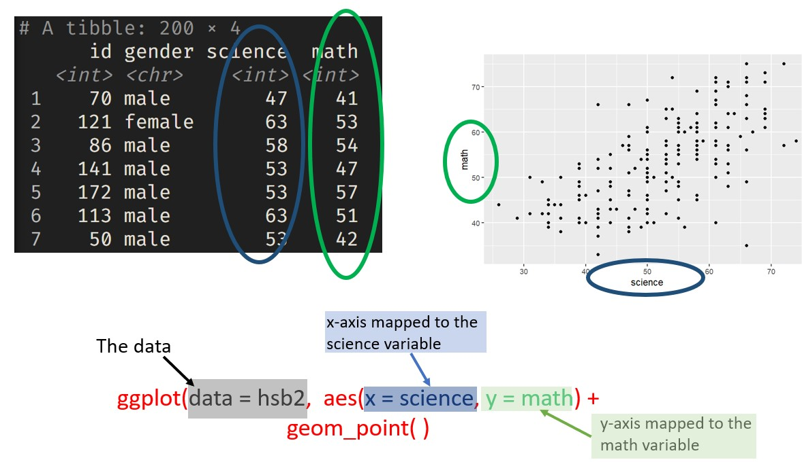
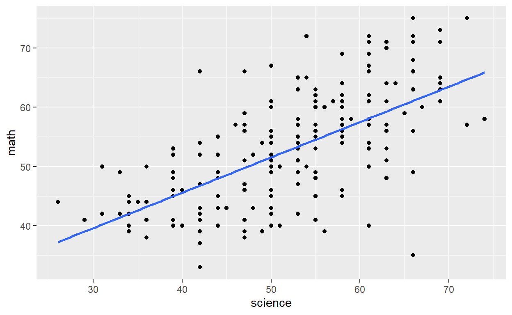
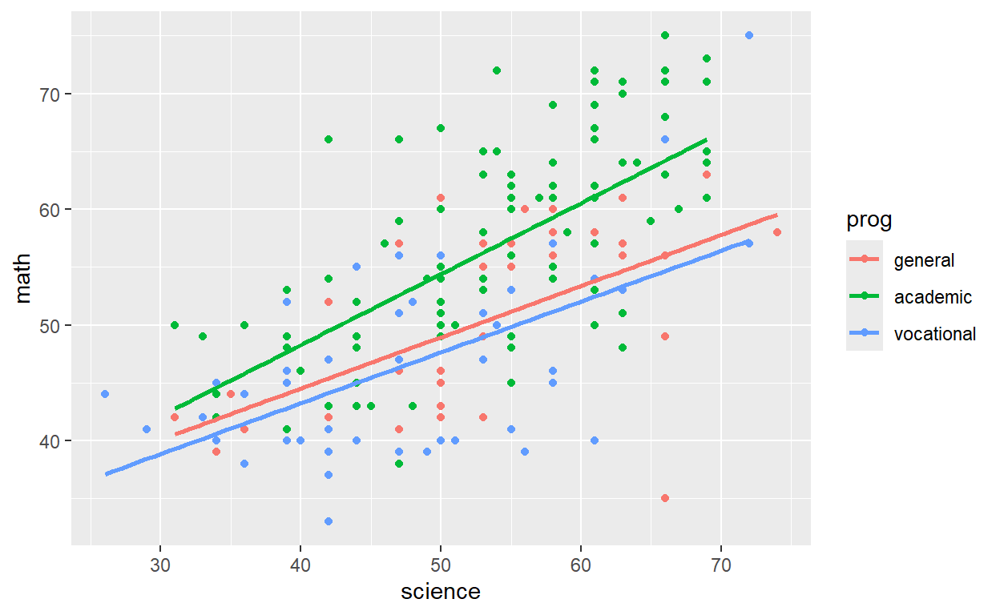

Welcome
Hello, and welcome to Introduction to data!
In this tutorial we will take you through concepts and R code that are essential for getting started with data analysis.
Scientists seek to answer questions using rigorous methods and careful observations. These observations form the backbone of a statistical investigation and are called data. Statistics is the study of how best to collect, analyze, and draw conclusions from data. It is helpful to put statistics in the context of a general process of investigation:
Step 1: Identify a question or problem.
Step 2: Collect relevant data on the topic.
Step 3: Analyze the data.
Step 4: Form a conclusion.
We will focus on steps 1 and 2 of this process in this tutorial.
Our learning goals for the tutorial are to internalize the language of data, load and view a dataset in R and distinguish between various variable types, classify a study as observational or experimental, and determine the scope of inference, distinguish between various sampling strategies, and identify the principles of experimental design.
This tutorial does not assume any previous R experience, but if you would like an introduction to R first, we recommend the RStudio Primers or the R Bootcamp.
Packages
Packages are the fundamental units of reproducible R code. They include reusable functions, the documentation that describes how to use them, and sample data. In this lesson we will make use of two packages:
- tidyverse: Tidyverse is a collection of R packages for data science that adhere to a common philosophy of data and R programming syntax, and are designed to work together naturally. You can learn more about tidyverse here. But no need to go digging through the package documentation, we will walk you through what you need to know about these packages as they become relevant.
- openintro: The openintro package contains datasets used in openintro resources. You can find out more about the package here.
Once we have installed the packages, we use the
library() function to load packages into R.
Let’s load these two packages to be used in the remainder of this lesson. Here is how we load the packages:
library(tidyverse)
library(openintro)Data in R
The first dataset we explore comes from the High School and Beyond Survey, a survey conducted on high school seniors by the National Center of Education Statistics.
The data are organized in what we call a data frame, where each row represents an observation or a case and each column represents a variable.
In this lesson we’ll work with the High School and Beyond dataset,
stored in the openintro package. The data are stored in a data
frame called hsb2. You can read more about this
dataset here.
To preview the data, simply type hsb2 into the code
chunk below and press run code.
hsb2Use the arrow on the right hand side to scroll through the columns, and the numbers on the bottom to see different rows in the dataset.
Loading data into R
There are many ways of loading data into R depending on where your
data are stored. In this lesson we’re using a dataset that is included
in an R package so we can access this dataset by loading the package
with the library() function. Other commonly used formats of
data are plain text, comma separated values (CSV), Excel files (XLS or
XLSX), or RData (the file format R uses to store data).
In many of the tutorials in these series we will use data from existing R packages, so you won’t need to worry about the myriad ways of loading data into R. However, learning more about loading data into R is very important for when you’re working on an analysis with your own data. A resource we recommend for learning more about importing data into R is the Data Import chapter in R 4 Data Science by Grolemund and Wickham.

Take a peek
When you want to work with data in R, a good first step is to take a
peek at what the data look like. The glimpse() function is
one good way of doing this. Click on the blue “Run Code” button to run
the code below, and take a look at the output of the
glimpse() function.
glimpse(hsb2)The output of glimpse() tells us how many observations
and variables we have in our dataset. It also lists the variables and
their types, along with values of the first few observations.
Now let’s put what you’ve learned so far to use!
We’ll practice on another dataset, email50, which
contains a subset of incoming emails for the first three months of 2012
for a single email account. We’ll examine the structure of this dataset
and determine the number of rows (observations) and columns
(variables).
Take a peek at the email50 dataset using the
glimpse() function.
glimpse(___)glimpse(email50)Types of variables
When you first start working with a dataset, it’s good practice to take a note of its dimensions; how many rows or observations and how many columns or variables the data frame has.
You learned how to do this in the previous section using the
glimpse() function. You also learned how to take a quick
look at the list of variables in the dataset. In this section, we will
delve deeper into the categorization of variables as numerical
and categorical. This is an important step, as the type of
variable helps us determine what summary statistics to calculate, what
type of visualizations to make, and what statistical method will be
appropriate to answer the research questions we’re exploring.
There are two types of variables: numerical and categorical.
Numerical, in other words, quantitative, variables take on numerical values. It is sensible to add, subtract, take averages, and so on, with these values.
Categorical, or qualitative, variables, take on a limited number of distinct categories. These categories can be identified with numbers, for example, it is customary to see likert variables (strongly agree to strongly disagree) coded as 1 through 5, but it wouldn’t be sensible to do arithmetic operations with these values. They are merely placeholders for the levels of the categorical variable.
Numerical data
Numerical variables can be further categorized as continuous or discrete.
Continuous numerical variables are usually measured, such as height. These variables can take on an infinite number of values within a given range.
Discrete numerical variables are those that take on one of a specific set of numeric values where we are able to count or enumerate all of the possibilities. One example of a discrete variable is number of pets in a household. In general, count data are an example of discrete variables.
When determining whether a numerical variable is continuous or discrete, it is important to think about the nature of the variable and not just the observed value, as rounding of continuous variables can make them appear to be discrete. For example, height is a continuous variable, however we tend to report our height rounded to the nearest unit of measure, like inches or centimeters.
Categorical data
Categorical variables that have ordered levels are called ordinal.
Think about a survey question where you’re asked how satisfied you are with the customer service you received and the options are very unsatisfied, unsatisfied, neutral, satisfied, and very satisfied. These levels have an inherent ordering, hence the variable would be called ordinal.
If the levels of a categorical variable do not have an inherent ordering to them, then the variable is simply called nominal. For example, do you consume caffeine or not?

Variables in hsb2
Let’s take a moment to go through the variables in the High School and Beyond dataset:
glimpse(hsb2)## Rows: 200
## Columns: 11
## $ id <int> 70, 121, 86, 141, 172, 113, 50, 11, 84, 48, 75, 60, 95, 104, 3…
## $ gender <chr> "male", "female", "male", "male", "male", "male", "male", "mal…
## $ race <chr> "white", "white", "white", "white", "white", "white", "african…
## $ ses <fct> low, middle, high, high, middle, middle, middle, middle, middl…
## $ schtyp <fct> public, public, public, public, public, public, public, public…
## $ prog <fct> general, vocational, general, vocational, academic, academic, …
## $ read <int> 57, 68, 44, 63, 47, 44, 50, 34, 63, 57, 60, 57, 73, 54, 45, 42…
## $ write <int> 52, 59, 33, 44, 52, 52, 59, 46, 57, 55, 46, 65, 60, 63, 57, 49…
## $ math <int> 41, 53, 54, 47, 57, 51, 42, 45, 54, 52, 51, 51, 71, 57, 50, 43…
## $ science <int> 47, 63, 58, 53, 53, 63, 53, 39, 58, 50, 53, 63, 61, 55, 31, 50…
## $ socst <int> 57, 61, 31, 56, 61, 61, 61, 36, 51, 51, 61, 61, 71, 46, 56, 56…Using the glimpse() function, we can obtain a list of
the variables in the dataset and also see what the values stored in
these variables look like.
The first variable is id, which is an identifier variable for the student.
## Rows: 200
## Columns: 1
## $ id <int> 70, 121, 86, 141, 172, 113, 50, 11, 84, 48, 75, 60, 95, 104, 38, 11…Each id represents the name of a unique student, and therefore this is a categorical variable, though the labeling of this variable is likely not that useful since we would not use this variable in an analysis of relationships between the variables in the dataset.
The next variable is gender, a categorical variable, with levels
"male" and "female". It should be noted that
the language of government surveys, such as High School and Beyond, is
slow to change. So with these types of data, you will continue to see
variables mislabeled as “gender” when they in fact measure the
biological sex (male, female) of the participant.
There is no inherent ordering to the levels of this variable, and
since we have just two possible values, this would be a
categorical/binary variable. The race variable has more possible values,
and it is also a categorical variable which has levels of
"white",
"african american","hispanic", and
"asian".
## Rows: 200
## Columns: 2
## $ race <chr> "white", "white", "white", "white", "white", "white", "african …
## $ gender <chr> "male", "female", "male", "male", "male", "male", "male", "male…Socio-economic status, on the other hand, has three levels
"low", "middle", and "high" that
have an inherent ordering, hence this variable is an ordinal
categorical variable.
## Rows: 200
## Columns: 1
## $ ses <fct> low, middle, high, high, middle, middle, middle, middle, middle, m…School type and program are also both categorical variables, with no inherent ordering to their levels.
## Rows: 200
## Columns: 2
## $ schtyp <fct> public, public, public, public, public, public, public, public,…
## $ prog <fct> general, vocational, general, vocational, academic, academic, g…The remaining variables are scores that these students received in reading, writing, math, science, and social studies tests. Since these scores are al whole numbers, and assuming that it is not possible to obtain a non-whole number score on these tests, these variables are discrete numerical.
Categorical data in R: factors
There are various data classes in R. In this tutorial, we’ll focus on ones that are relevant to the concepts we will introduce. One of these classes is a factor, which is what R often stores categorical variables as. An important use of factors is in statistical modeling, since categorical variables enter into models differently than numerical variables. We’ll learn more about what this difference is in a later tutorial, but for now just keep in mind that while factors might crop up in places where they’re not actually helpful, there are also many places where they are essential to running a statistical analysis correctly.
Categorical Data
- Often stored as factor in R
- Common in subgroup analysis
- Only interested in a subset of the data
- Filter for specific levels (values) of categorical variable
A common step in many analyses that involve categorical data is a subgroup analysis, where we work with only a subset of the data. For example, analyzing data only from students in public schools or only for students who identified as female. We can obtain these subsets by filtering for the specific levels we’re interested in.
Suppose we want to do an analysis of only the students in public schools in the High School and Beyond dataset. Let’s first find out how many such students there are.
One option for obtaining this information in R uses the
count() function from the dplyr package,
one of the packages included in the tidyverse. This package provides a
variety of functions for wrangling and summarizing data. Once such
function is count() which gives the frequencies of
occurrence of the unique values in a given column. In this case we’re
interested in the number of students for each level of the
schtyp (school type) column.
hsb2 |>
count(schtyp)There are 168 students in public schools and 32 in private schools.
Let’s pause for a moment and dissect what happened in these two lines of code.
We can read the code as: “take the hsb2 data frame and
pipe it into the count() function, then
count() the occurrences of unique values in the
schtyp variable.”
You might be wondering what we mean by “pipe it into the
count() function”?
The pipe operator

The pipe operator, which is vertical bar
greater than, tells R to pass the object that
comes before it into the first argument of the function that comes after
it. Mathematically, x pipe f(y) becomes f(x,
y), since x is piped into the first argument of the function
f().

For example, one way of adding numbers in R is using the
sum() function. The sum() function has as many
arguments as there are numbers you wish to add, where each number is
separated with a comma. For example, to add 3 and 4, we would use the
following code. Notice, 3 and 4 are separated by a comma, indicating
that these are the two numbers we wish for the sum()
function to add.
# Sum of 3 and 4, without pipe
sum(3, 4)## [1] 7If we wanted to do the same operation with a pipe, we would instead
use the code below. The pipe operator inserts 3 as the first argument
into the sum() function, which looks like
sum(3, 4).
# Sum of 3 and 4, with pipe
3 |> sum(4)## [1] 7Piping 3 into the sum() function may seem a bit silly,
especially since it’s not much easier than typing sum(3,4).
However, as we progress through these tutorials you will see that the
piping operator will allow us to sequentially link together data
wrangling operations. This can save us a great deal of headache later
on, as the format of operations that use the pipe are far simpler to
read! We’ll start with short pipes and throughout the tutorial build up
to longer pipes that perform multiple operations.
Next, let’s use the filter() function to filter the data
to only include public school students.
hsb2 |>
filter(schtyp == "public")We can read the above code as: “take the hsb2 data frame
and pipe it into the filter() function.
Next, filter() the data for cases where school type
is equal to public”.
We should take note of two pieces of R syntax: the double equal
sign (==) and quotations (““). In R, ==
is a logical test for “is equal to”. R uses this
logical test to search for observations (rows) in the data frame where
school type is equal to public, and returns a data frame where this
comparison is TRUE for every row.
In R, variables that are categorical use characters (rather than
numbers) for values. To indicate to R that you want your logical test to
compare the values of a categorical variable to a specific level of that
variable, you need to surround the name of the level in quotations
(e.g. schtyp == "public"). The quotations tell R that the
value of the variable is a character, not a number. If you forget to use
quotations, R will give you an error message!
Compare the result with and without the filter by removing the filter from the code above and running it.
Now, if we make another frequency table of school type in the filtered dataset, we should only see public school in the output.
hsb2 |>
filter(schtyp == "public") |>
count(schtyp)Now we will practice filtering and handling factors with a different categorical variable.
Filtering based on a factor
Next we will practice identifying variables in a different dataset.
Recall that the glimpse() function tells us the number
of observations and variables in a dataset as well as the names and
types of each column, along with a neatly printed preview of their first
few values.
Let’s have another look at the email50 data, so we can
practice identifying variable types.
Use the glimpse() function to view the variables in the
email50 dataset.
Remember that variable descriptions are available in the help file
for the dataset, which we can access by typing ?email50
(that is, type a question mark followed by the name of the dataset) in
the code box and running it.
Review the output to identify each variable as either numerical or categorical, and further as discrete or continuous (if numerical) or ordinal or not ordinal (if categorical).
glimpse(___)glimpse(email50)Next, we’ll practice working with a factor variable,
number, from the email50 dataset. This
variable tells us what type of number (none, small, or big) an email
contains.
Modify the code below to:
- Start with the dataset called
email50 - Filter a subset of the original dataset containing only emails with
"big"numbers. - Use the
glimpse()function again to establish how many emails contain big numbers.
# Subset of emails with big numbers: email50_big
email50 |>
filter(___ == ___) |>
# Glimpse the subset
___( )# We're looking for emails with big numbers, so filter for `number == "big"`.# Subset of emails with big numbers: email50_big
email50 |>
filter(number == "big") |>
# Glimpse the subset
___( )# Subset of emails with big numbers: email50_big
email50 |>
filter(number == "big") |>
# Glimpse the subset
glimpse( )Visualizing numerical data
The most logical and most useful first step of any data analysis is an exploratory analysis. And a very important and informative component of exploratory data analysis is visualization.
We will learn a lot more about data visualization in the tutorial on Summarizing and Visualizing Data, so we won’t go into too much detail on data visualization in this tutorial. Let’s, however, make a simple scatterplot to visualize the relationship between two numerical variables so that you can get some exposure to constructing plots in R and how to interpret them.
We’ll visualize the relationship between the math and science scores of the students in the High School and Beyond dataset.
ggplot(data = hsb2, aes(x = science, y = math)) +
geom_point()Let’s pause for a moment and review what’s going on in the code above.
- We use the
ggplot()function to create plots. - The first argument is the data frame containing the data we wish to
plot:
data = hsb2. - In the
aesthetics argument, we map variables from the data frame to certain components of the plot. In this case we want to plot science test scores on the x and math test scores on the y axis:aes(x = science, y = math). - Lastly, we specify what
geometric shapes should be used to represent each observation. In this case, we want to make a scatterplot, so we want each observation to be represented by a “point” on the plot, hence we add use thegeom_point()function to add a points layer to the plot.

In summary, the main function is ggplot(), the first
argument is the data to use, then the aes maps the variables to certain
features of the plot, and finally the geom informs the type of plot you
want to make.
Another important aspect to note here is that the
geom_XXX() function is separated from the
ggplot() function with a plus, +.
As we mentioned earlier, ggplot2 plots are constructed in series of
layers. The plus sign separates these layers. Generally, the
+ sign can be thought of as the end of a line, so you
should always hit enter/return after it.
Now that you’ve learned how to make the plot, let’s talk about what the plot says.
Interpreting a visualization
We can see that there is a positive relationship between the science and math scores of students, meaning that students who score highly in science tend to also score highly in math. Probably not that surprising a result.

We also mentioned earlier that extending from bivariate to multivariate plots is easy in ggplot2. Let’s test that out!
Math, science, and program
Let’s plot the same math and science test scores, but this time let’s also consider the program that the student is in: general, academic, or vocational.
ggplot(data = hsb2, aes(x = science, y = math, color = prog)) +
geom_point()The code looks very similar to what we used before, except that we
now have one other aesthetic mapping between the program variable and
the color of the points that represent the observations.
Note that we type the name of the variable as it appears in the data
frame: prog.
How does the plot below differ from the plot above? Look at the plot above and think about where the lines would go if we fit a separate line for each level of the program variable (each color of points). The result would be a plot that looks like the one below.

The same positive relationship between math and science scores is still apparent. But we can also see that students in academic programs, shown with green points, tend to have higher math scores relative to their science scores than those in vocational programs, in blue, and general programs, in red.
We will wrap up this lesson with some practice creating a similar plot with different variables.
Visualizing numerical and categorical data
Next we’ll visualize the relationship between two numerical variables
from the email50 dataset, separated by whether or not the
email was spam. This means that we will use an aspect of the plot (like
color or shape) to identify the levels in the spam variable
so that we can compare plotted values between them.
Recall that in the ggplot() function, the first argument
is the dataset, then we map the aesthetic features of the plot to
variables in the dataset, and finally the geom_XXX() layer
informs how data are represented on the plot.
Next, we will make a scatterplot by adding a
geom_point() layer to the ggplot() call.
- Create a scatterplot of number of exclamation points
(
exclaim_mess) on the y-axis vs. number of characters (num_char) on the x-axis. - Color points by whether or not the email is
spam.
ggplot(email50, aes(x = ___, y = ___, color = ___)) +
[GEOM]ggplot(email50, aes(x = num_char, y = ___, color = ___)) +
[GEOM]ggplot(email50, aes(x = num_char, y = exclaim_mess, color = ___)) +
[GEOM]ggplot(email50, aes(x = num_char, y = exclaim_mess, color = spam)) +
{GEOM}ggplot(email50, aes(x = num_char, y = exclaim_mess, color = spam)) +
geom_point()Based on the plot, does there appear to be a relationship between these variables?
Congratulations!
You have successfully completed Lesson 1 in Tutorial 1: Introduction to data. If you need to generate a hash for submission, click “Next Topic”.
What’s next?
🗒 Tutorial 1: Introduction to data
1️⃣ Lesson 1.1: Language of data
Hash and submit
Submit your hash in a form
After creating the hash, please copy it, navigate to this form and fill it in and submit. You will need to submit the form once for every lesson you complete in this tutorial.